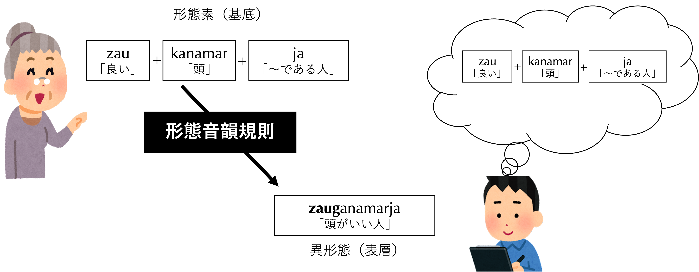
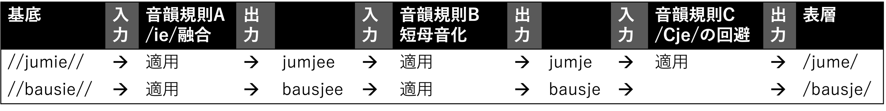
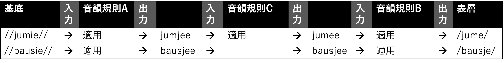

伊良部島で調査を開始して2ヶ月ほど経った。それまでの基礎語彙調査が「語彙」すなわち名詞やら動詞やらの膨大な表現の収集であったのに対し、この段階になると「文法項目」すなわち活用語尾やら名詞の複数接辞、あるいは助詞や接続詞などの有限個の文法形態素の形の洗い出しと機能の措定（意味の記述）にも精を出すようになっている。気づけば、もう文法記述の真っ只中に放り込まれた状態になっているのである。あなたが用いる音素表記は安定してきているが、形態素の切り方、その基底をどう定めるかについては一進一退の状態だと思う。このような段階で役にたつのは、フィールドワーカー達が様々な言語の調査を通して身につけてきた形態論のテクニックである。形態素が組み合わさって生じる形態音韻規則にはある種の類型（パターン）があり、それはどのような言語を扱う際にも役にたつ。この章では、伊良部島方言の形態音韻規則を類型化して解説することを通して、あなたが自分自身のフィールドでも同様の類型化を行って行けるようにトレーニングする。
なお、ここで展開する形態素分析のテクニックは、まず記述する側から見て、提示された音素列を形態素に切り分けるテクニック（構造主義的形態論）と、話者側から見て、発話される前の形態素（基底）から実際の音韻規則の適用を経て発話に乗る（表層）までのプロセスを提示するテクニック（生成音韻論、あるいは形態音韻論）と言える。記述を進めていれば、そのような形態分析の「王道」に様々な問題が潜んでいることを知り、ある意味では不毛なことをしていると気づくタイミングがやってくる。しかし、それに実感を持って賛同するためにも経験しなければならないのが、このモデルである1本解説は形態論や形態音韻論の教科書ではないから、様々な用語や微細な分析テクニックを解説する余裕はない。形態音韻論は音韻論の教科書の中で扱っているものがほとんどである。これは、形態素の組み合わせから実現形を導出する領域（即ち形態音韻論）が基本的には音韻論の範囲である、という理論的な位置付け（特に生成文法における生成音韻論という理論的枠組みにおける位置付け）が理由であったり、あるいは音韻論で学んだ道具立てを使った応用編、という性格を持っているからでもある。よって、音韻論に関する教科書をいろいろ探ってみると良い。私の個人的なおすすめはHayes (2009) Introductory Phonology (Blackwell)である。日本語なら、柴谷・影山・田守(1981)『言語の構造（音声・音韻篇）』（くろしお出版）だろうか。なお、本章を読み進めながら伊良部島方言の形態音韻規則の全容を知りたくなったら下地(2018)を参照してほしい。。
これまで手に入れた基礎語彙データのほとんどは単語であろう。「単語」が何を指すのかは5章で詳しく考えていくとして、ひとまず直感的に辞書の項目になりそうな、短い表現であることは確かである2経験的に、1から2音節程度が基礎語彙によくある長さで、3から4音節あたりになってくると、複数の「単語」を合わせたもの（複合語）か、少なくとも歴史的にそのような成り立ちであったろうと推定できそうなものが増えてくる。例えば2章で見た基礎語彙の中で /mipana/「顔」は /mii/「目」と /pana/「鼻」を合成したものを起源としているらしいとわかる。。
しかし、これらの中には、あるいは話者が気まぐれに教えてくれる関連語彙の中には比較的長いものもあって、明らかに2つ以上の形態素に分解できるものも含まれている。例えば、/kanamar/「頭」という語彙を習ったときに、話者がたまたま「そういえば、「頭がいい人」のことを /zauganamarja/ というよ」と教えてくれたとしよう3このようなことは非常に頻繁にある。ありがたいことである。基礎語彙調査は、話者にとって「教えるべきこと」が極めて分かりやすいために、余裕も生まれやすい。身体語彙を5つほど聞いていると、「ああ、この人は今、身体の方言を習いたいんだな」と気づいて、こちらが用意していなかった、実に様々な関連語彙を教えてくれるし、事前に「次回は体の部分について習いますのでよろしくお願いしますね」と伝えておけば、話者によっては膨大な関連語彙リストを自らメモして持ってきてくれることすらある（！）。私は、むしろそれを見越して、用意していく語彙は1日に20項目くらいに抑えて、話者が積極的に教えてくれる関連語彙の収集をメインにしていたほどである。そうしたのには別の理由もある。基礎語彙調査は調査者側の母語の世界の切り方に沿ったものになってしまうというリスクがあるが、こうすればある程度、このリスクを回避できるのである。例えば、身体語彙のうち、日本語の母語話者なら、調音音声学でしきりに習う「口蓋」を基礎語彙とは考えないから、まさかこれを調査項目にしようとは思わないだろう。ところが、伊良部島方言には /azɨgaa/「口蓋（上の歯の後ろ側から始まる、熱いものを食べてよく火傷する箇所）」という立派な基礎語彙があり、私が「口」「歯」「唇」「舌」あたりまで聞いて別の語彙にシフトすると、慌てて「歯の裏側のことを /azɨgaa/ というんだよ」と教えてくれた。この語彙は、富浜(2013)の『伊良部方言辞典』にも当然、立項されている(p. 18)。/azɨ/は、その音対応から古典語でアギやアギト（上顎を口の内側から指す）という名詞として知られるものと同根であろう。/gaa/は /kaa/「皮」の連濁形と考えられる。紛らわしいが、/azɨ/は「味」という同音異義の語彙もあって、話者によっては語源意識の薄れからか、「味を感じる皮」と考える人もいるが、語源的にはこれは正しくない。。基礎語彙調査もだいぶ進んできたこの頃になると、/zauganamarja/ における /zau/ が「良い」という意味の形態素であることを、例えば以下のような基礎語彙の収集を通して知っているはずである。
zaukarとssukarの対比を通じて、これらの語が2つの形態素に分かれていることが同時にわかる。つまり、前半の /zau/「良い」および /ssu/「白い」という、形容詞の語彙的な意味を担う部分と、/kar/ という、おそらく形容詞の活用に関わる何らかの形態素に分解できることがわかる。そしてこの分析は、次のペア /zaupžtu/ と /pžtu/ の対比によっても確実であることがわかる。今ここで行なっていることが、形態素分析の実際である。
さて、/zauganamarja/ は、/zau/ と、おそらく /kanamar/ が何らかの理由で形を少し変えた /ganamar/ の部分を含み、さらに /ja/ という形態素も切り出せそうだとわかる。2章でも簡単に触れたように、/-ja/ という形態素は「〜する人」「〜である人」を表すことをどこかで覚えて知っていれば、この単語は途端に zau-ganamar-ja と3つの形態素に分解できそうだ、と気づく。/zauganamarja/「頭のいい人」は、/zau/「良い」+ /kanamar/「頭」+ /ja/「〜である人」の3形態素からなる1単語であろう、という見通しがたった。意味的にも確かに、「良い頭である人」＝「頭のいい人」は妥当な分析だろう。
形態素は音素と同様、話者の心的表示であって、厳密にはそれをダイレクトに「聞く」ことはできない。我々調査者が聞くことになるのは形態素が発話されたもの、つまり実現形であり、これは異形態と呼ばれる。異形態は、ストレートに形態素そのままの形で出てくることもあるが、実際は周囲の環境に応じて微妙に形を変えることが多い。まさに音素（心的表示）と異音（実現形）の関係とパラレルに考えることができ、ここでもまた、話者と調査者のそれぞれの視点に立って考えてみるのがわかりやすい（図1）。話者の視点からは、頭の中で /zau/ + /kanamar/ + /ja/ という3つの形態素を組み合わせ、それを単語にして発話しようと決める。それらが組み合わさるとき、周囲の環境に応じて、/kanamar/ はその形態素頭のオンセット /k/ を /g/ に交替させる。このように、形態素の組み合わせの際に生じる特定の音韻交替の規則を形態音韻規則という。形態素 /kanamar/ に対して、形態音韻規則の適用を受けた /ganamar/ が最終的な実現形（異形態）である4/kanamar/ が /ganamar/ に交替する際の形態音韻規則はズバリ連濁である（3章参照）。複合という単語の作り方（語根と語根をそのままくっつける方法）に固有の形態音韻規則である。伊良部島方言では形容詞の語根と名詞がよく複合するが、日本語の名詞＋名詞の複合の場合と同様、連濁がよく見られる。。調査者は、表層に出てきた /zauganamarja/ を観察し、いろいろな証拠をもとに、それが異形態 /zau/, /ganamar/, /ja/ を含むと睨み、そこから話者の心的表示である形態素の組み合わせ、すなわち基底の構造を復元していく。基底から表層を導く形態音韻規則は、形態素の種類によって様々で、それを1つ1つ見つけてはルールを明示していくのは調査者の重要な仕事である。
以下で説明をする際、基底すなわち形態素と、表層に出てくる実現形すなわち異形態を特に明確に区別する必要があるとき、前者を // // で、後者を / / で示す場合がある（これもまた言語学でよくなされる表示法である）。//zau-kanamar-ja// は、表層で /zauganamarja/ として出てくるということである。

あなたが単語であろうとみなす /zauganamarja/ が、今3つの形態素に分解できることがわかった。単語の内部の形態素境界は、最も一般的な言語学の慣習によるとハイフンで標示する。実現形である /zauganamarja/ に対して境界を入れるということは、異形態同士に境界を入れていることになる。しかし、結局その境界は形態素の境界と一致する場合が多い。
よって、異形態の境界であっても、とりあえず形態素境界と読んでおこう。なお、言語学でよくやる例文提示の際は、実際に発話される文なり句なり語なりを音素表記にして、それに（つまり異形態レベルで）形態素境界を入れたものを1行目に、そして1行目のそれぞれの区切られた異形態に対して訳（グロス）をつけたものを2行目にして提示する。このような例文提示法を、よく基本的な3段方式の提示という5Canonical trilinear representation (Lehman 2004)の和訳。この基本的な3段方式や後述の4段のやり方も含め、日琉諸語の言語構造の実態に合わせた方言研究における例文提示の方法についてより詳しく知りたい人は下地理則 (2020)「方言研究における例文提示法について」を参考にしていただきたい。。
形態素境界と実現形の境界（異形態の境界）が一致しないこともある。最もよくある例は、形態素の組み合わせが激しい融合(fusion)を引き起こし、実現形において境界が見えなくなってしまう場合である。伊良部島方言にはそのような例はなかなかないが、例えば以下のような例を見つけることができる。
この例の基底構造は //jum//「読む」+ //i//「〜しろ（命令）」+ //e//「〜か？」の3形態素の組み合わせである6/e/ は、単に命題の真偽を問う疑問というより、よりメタ的な（発話内容ではなく発話したセリフそのものに注目した）疑問助詞（発話内容の「確認疑問」の助詞）である。「読め（ってこと）か？」は、「あなたは今、「読め」と言ったのか？」という意味である。。基底構造の組み合わせ //jumie// に形態音韻規則が働いて、命令の形態素 //i// が見えなくなってしまっている。なお、ここで働いている形態音韻規則がどんなものか、この例だけでは判断できない。安易に命令の /i/ が「脱落」したのだ、と言えないことは以下の例からわかる。
/bausjee/ は、基底では3つの形態素、即ち //bau//「棒」+ //si//（具格助詞「で」）+ //e//（確認疑問助詞）からなる。/bausjee/ は、特にぞんざいな発話（早い発話）では /bausje/ でも良い。この例からわかることは2つある。まず、今考えたい形態音韻規則は命令形態素と疑問形態素の組み合わせに限らない、ということである。疑問形態素 //e// が、命令形であれなんであれ、狭母音 //i// で終わる要素にくっつく際に適用される形態音韻規則だろう、ということである。次に、基底における //bau// + //si// + //e// の組み合わせによって生じる //ie// が /jee/ に交替した、ということである。/ie/ や /ia/, /ua/ などの時に、前半の狭母音（/i/ や /u/）が短くなる（すなわち /j/ や /w/ になる）ことは伊良部島方言でも、そしていろんな言語でも見られる。/i/ と /j/、および /u/ と /w/ は、音声学的に見れば「同じ母音」であり、単にその長さが違う。短いものは、その短さゆえに音節核として機能できず、従って子音として分類され、接近音 /j/ および /w/ としての記号を与えられるのであった（3章参照）。/i/ や /u/ が他の母音（例えば /a/）と組み合わさった時、それら他の母音に「音節核としての地位」を譲り、自らは短くなって接近音（子音）の位置を占める、という現象は、2つの独立の音節に属する母音が1つの音節に融合する例として考えることができる。
そこで、この形態音韻規則を以下のように定式化してみよう。
この規則の最後の(/je/)は、母音が短くなる（より正確には、/e/ が1つ脱落する）ことを意図している。今、この規則を前提として、再び /jume/ を検討しよう。//jum// + //i// + //e// は以下のようなプロセスを経て、基底構造から形を変えていくと想定できる7このような、基底構造を入力として、形態音韻規則によって形を変えていくことを派生ということがある。。
さて、この /jumje/ は、まだ我々が観察できるもの（音声として [jume]）と異なる。この言語には /mje/ という音節をはじめ、歯茎阻害音（/s/, /c/, /z/）以外は /Cje/ という音節構造は許されない。上記のように出来上がった /jumje/ は単に確認疑問形式の成立のために一連の形態音韻規則を機械的に適用しただけで、この言語の一般的な音韻制約（適格な音節になっているかなど）の調整を経ていない。/mje/ を適格な音節に修正するために /j/ を削除するという、（この疑問形式の形成に限らない）より一般的な音韻規則を想定する必要がある。
こうして、基底構造（//jum// + //i// + //e// の形態素の組み合わせ）から、形態音韻規則、そしてより一般的な音韻規則の適用を経て、実現形を導出することができた。出来上がった /jume/ にダイレクトに形態素境界を入れようと思っても、命令の /i/ の名残は見つからないし、しかもそれは単に消えたわけでもない。よって、/jume/ を /jum-e/ と切ることは正確ではない。
このように、基底（形態素の組み合わせ）と表層（実現形）の一対一の対応が見られない場合、上のような3段方式の例文提示は不都合である。こういう場合は、さらに1段足して、1段目に実現形（形態素分析なし）、2段目に基底構造（形態素の組み合わせ）、3段目に、2段目に対応したグロス付与、という風な提示が好都合である。
伊良部島方言を含む宮古語は概して形態素境界が明瞭に保たれやすく、3段方式の例文提示で事足りることが多いが、他の言語、例えば私が長く記述している宮崎県椎葉村尾前方言では母音融合が激しく、基底と表層の乖離が大きい場合も比較的多い。扱う言語のキャラクターに合わせて、例文提示の方法も考えていけば良い。
形態素が組み合わさるときの典型的な形態音韻規則は削除、挿入、交替、融合である。融合についてはすでに上で触れたので、以下ではそれ以外の3つについて、順番に具体的なデータ分析を通して学んでいこう。
形態素が組み合わさるとき、形態素の境界にある音節同士がそのまま隣接するとその言語で不適格な音節構造になってしまうことがある。そんな時、形態音韻規則によって一方の音素が削除され、適格な音節構造が保持されることがよくある。
以下に示すデータは複数形、方向格形、与格形の作り方を例示したものである。各ペアを見比べながら、名詞語根と複数接辞、格助詞に分割できそうな場所を見つけて、実現形にハイフンを入れてみよう。そして、基底から表層を導く際、削除という点に注意して定式化してみよう。
基底には元々なかった要素（音素）が新たに挿入されることもある。非常によくあるパターンは、以下の2つである。母音挿入は、形態素境界に生じた、音節構造上許されない子音連続や語末のコーダ子音を回避するために、母音が挿入されることをいう。渡り音挿入は、同様に音節構造上許されない母音連続を避けるために渡り音（/j/や/w/）が挿入されることをいう。
ここで、伊良部島方言における挿入現象を検討してみよう。以下は主題助詞「は」を名詞にくっつけた時の形（主題形）をいくつか挙げたものである。このデータを頼りに、主題助詞の形態素の形（基底形）と、異形態を導く規則を同定してみよう。
(9)で示すように、相互に無関係な、しかも単独の形態素の中で/ɨ/挿入が生じるのだから、この母音挿入が特定の形態素の組み合わせに駆動されるものではないことは明らかだろう。/ɨ/挿入は、形態素の組み合わせがあろうがなかろうが、とにかく最終段階（表層）において観察される音節構造を適格なものに保つために挿入される。例えば、単語の末尾に来る子音は1つまで、しかも共鳴音に限られるという厳格な制限があるために、(9)の全ての単語は基底のままでは出現できない。そこで/ɨ/挿入が駆動され、適格な音節構造を持った表層の語形が出力されるというわけである8このような解説を聞いて、モヤる人もいるかもしれない。つまり、「/ɨ/挿入を仮定したからこそ、結果として語末子音に「共鳴音のみ」という制限が生じたわけで、その制限を回避するために/ɨ/挿入がある、というのは論理が逆転しているのではないか？」と。しかし、以下のように順序立てて説明すればこのモヤモヤは解消できる。まず、我々が耳で聞いて確認できる(9)の表層形には、確実に/ɨ/の音声が確認できる。実際に声帯振動が聞こえたり、仮に無声化していても、/ɨ/特有の、唇の横への開き（平唇化）が見られる。よって、これらが表層において母音で終わっている、と考えるのは正しい。これを踏まえた上で、表層において確実に子音で終わっている単語を集めてくると、全て共鳴音で終わっていることが確認できる。よって、まず「単語が子音で終わる時には共鳴音に限られる」という一般化を打ち立てることができる。次に、(9)の単語は全て、基底において確実に子音で終わっていると見なければならないという独立した根拠がある。すなわち、これらには、（確実に子音で終わっている共鳴音終わりの単語と全く同様に）重子音化規則が適用される（(11)も参照）。先ほど明らかにした確実な事実すなわち「(9)は表層では母音/ɨ/で終わっており、したがって単語が子音で終わる時には共鳴音に限られる」と、今明らかにした「(9)の単語は基底において子音で終わっている」という事実を合わせて考えるなら、合理的な説明は「(9)の単語は基底では子音で終わっているが、共鳴音ではないために、母音/ɨ/が挿入され、表層では母音終わりとなって実現した」というものになる。。この規則は、もちろん形態素の組み合わせによって生じてしまう、不適格な子音連続を回避する手段にもなる。
このほかにも、一般的な音韻規則としての挿入現象はある。語中ではC.V（コーダ子音に隣接するオンセットなしの母音）が許されない。形態素の種類によらず、Cで終わる形態素にVで始まる形態素が隣接した場合、C.Vを回避する手段として、コーダと同じ子音がVのオンセットにコピーされ挿入される重子音化が生じる。
形態素が組み合わさるとき、基底において隣接する音素の一方が周囲の影響によって別の音素に交替することがある。理由がはっきりしている場合が多く、それは大体同化で説明される。同化とは、その隣接する音素の影響で、それに似ることを指す。完全に似る、すなわち隣接する音素と同じものになれば完全同化といい、部分的に（例えば有声性だけ、とか調音位置だけ、とか）似る場合は部分同化という。形態音韻論で交替を扱う際、同化のメカニズムを推理するために調音音声学的な知識とそれをフルに使った考察が肝になる。
以下のデータを見てみよう。逆接の助詞/suga/「〜けど」は、それが接続する節末の要素（動詞）の末尾音によっては完全同化を起こす。
節末の動詞の語末が/r/の場合、/suga/の/s/が完全同化し、/r/に交替する。ただし、これだけでは不十分である。/rr/「入る」の場合にそうならないからである。/rr/は、音節構造としては成節子音（準音節）Rが重なったRRとして分析でき、それは語末にコーダを持つ構造とは異なる（むしろ音節核のみからなる）から、この同化規則は「動詞の語末コーダが/r/の時」に限定される、と言うことである9別の考え方もある。/rr/ + /suga/が同化規則の適用を受けた場合、/rrruga/となるはずで、この「超」重子音/rrr/を形成するのを避けるために、この規則が適用されない、と考えることもできる。。
以下の例は、動詞のさまざまな語形変化パターンのデータを抜粋したものである。各データの左端は語根の形であり、例えば語根kak-「書く」のハイフンは、後に何かしらの接辞をとって動詞として自立することを示している。fa(u)-「食べる」やumu(v)-「思う」におけるカッコは、ある時には/u/や/v/が削除されることを示す（この削除の環境も同定してみよう）。
| 語根 | 意志 | 否定 | 使役 | 過去 | 条件 | |
|---|---|---|---|---|---|---|
| (20) | jum- 読む |
juma 読もう |
juman 読まない |
jumasɨ 読ませる |
jumtar 読んだ |
jumtigaa 読んだら |
| (21) | fa(u)- 食べる |
faa 食べよう |
faan 食べない |
faasɨ 食べさせる |
fautar 食べた |
fautigaa 食べたら |
| (22) | umu(v)- 思う |
umuu 思おう |
umuun 思わない |
umuusɨ 思わせる |
umuvtar 思った |
umuvtigaa 思ったら |
ここでそれぞれの語形を形態素分析してみよう。その上で、同化によって基底形の音素が交替する例を見つけ出してみよう。
交替がもう少しわかりにくいメカニズムで生じる場合もある。以下の調査データはいくつかの動詞の使役形の作り方に関するデータであるが、使役接辞の基底形（形態素としての形）を示し、その異形態を導く形態音韻規則を示してみよう。なお、(17g)は先ほど学んだ確認疑問の形式である。
記述を進めていると、いろいろな（形態）音韻規則が見つかる。上で例示しただけでも、鼻音の削除規則、/s/を/r/に交替させる同化規則、/j/挿入規則、一般的な/ɨ/挿入規則と重子音化（コピー挿入）規則があった。そうなると、例えば1つの表現を形成する際、いくつかの形態音韻規則がそれぞれ生じるということも当然考えられる。
そこで、複数生じるそれぞれの形態音韻規則の適用順序もまた、重要な記述内容になってくる。基底に対して、さまざまな形態音韻規則を、その順序まで指定して適用し、それによって基底から表層を導く、という記述のやり方をRule Orderingと呼ぶ。基底を出発点に、それが入力となって、ある音韻規則が適用され、それが出力され、それがさらに別の音韻規則の入力となって、というふうに規則を逐次的に適用し、最終的な出力形式（表層）が導出されるという、現代言語学で広く共有されている考えに基づいている11最適性理論という音韻理論では、この逐次的な規則の適用という考え方と大きく異なる考え方を採用している。ある入力（形態素の組み合わせ）に対して出来上がる可能な出力がいくつかあるとする。そこに、その言語の出力形に関して「破ってはならない」制約のリストを照らし合わせ、可能な出力のうち最も制約を守った（すなわち最適な）形式が出力になる、という考え方である。実際の出力（たとえば確認疑問形式の例では/jume/や/bausje/）をもとに、その制約のリストの内実がどのようであるからこれらの出力が最適となり得たのか、ということを逆算して推測していく。そのような考え方のメリットやデメリットを知るためにも、まずはより保守的なRule Orderingの考え方を身につけておいた方が良いだろう。。実際、私たちは2.1節で、動詞語根/jum/「読む」の命令形/jumi/および道具格の名詞句/bausi/「棒で」にそれぞれ確認疑問助詞/e/をつけた確認疑問形式に関して、以下のようなRule Orderingを想定した。

実は、このRule Orderingに関しては、必ずしもこの順序でなくてはならないわけではない。すなわち、音韻規則BとCを入れ替えても、正しく表層を導くことができるからである（規則Aは必ず最初に適用される必要がある点に注意）。

このように、適用順序を決める際、データに照らしてみて、どっちの案が良いか決め手がない場合もある。しかし、多くの場合は適用順序が1つに定まる。この順序を間違えると、誤った出力を生むことでそれがわかる。だから、Rule Orderingを記述する際は、自分が組み立てた「プログラム」に誤りがないか、慎重にバグをチェックする必要がある。
概して、適用範囲が広い規則は、どんな形態素の組み合わせであれ適用されるわけだから、最終的な語形の適格性（特に音節構造上の適格性）に関して、いわば「最後の守護神」のような、最終チェック機構として働いていることが多いだろう。よって、他の形態音韻規則の適用との相対的な順序関係に関しては、それらよりも後に適用されることが普通である。実は、確認疑問形式のRule Orderingに関して図2の案を「しれっと」採用したのは、こういう理由があった。つまり、Rule Orderingの最後に位置付けた音韻規則（/C/が歯茎阻害音以外の/Cje/を回避するという規則）は、どんな単語にも適用される一般的な音韻規則であるのに対し、/(j)ee/を/(j)e/にする短母音化はそうではないので、より前に持って行ったという事情があった。
この章を締めくくるにあたって、もう一度「形態素」という概念について理解を深めておこう。というのも、あなたは今後、フィールド調査でのほぼ全ての期間、形態素分析という作業を通してこの概念と付き合っていくことになるからである。
形態素は、教科書的な定義で言えば「意味を持つ最小の単位」である。それ以上分析してしまうと、もはや意味をなさなくなってしまい、それはただの音素（列）になってしまう、限界ギリギリの要素である、と習う。例えば「伊良部の人」を表す /iravpžtu/ という単語（複合語）は、/irav/「伊良部」という名詞語根と /pžtu/「人」という名詞語根からなる。これは、それぞれの名詞を単体で基礎語彙として知っているから、ほぼ自明である。このことから、/iravpžtu/がこれ以上何かの形態素を含むものとして分析できなそうなのもまた、自明に思える。よって、/irav/も/pžtu/もそれぞれ「意味を持つ最小の単位」であると判断して、形態素分析をここまでとする。
しかし、ある音素列が「意味を持つ最小の単位」であると、どうやって知るのだろうか？上で見た複合語の例を考えると、「伊良部の人」を表す語は、当然、「伊良部」という要素と「人」という要素を含み、それ以外を含まないはずだから、2形態素から成り立っているだろう、と予想しやすいため、特に疑問を抱くことなく形態素分析を行える、ごくごく稀な例である。しかし、実際に自分で色々な構造を分析してみると、「果たしてこの音素列はさらにいくつかの意味要素に分解できるのだろうか？」とか、「切ってしまったこの2つの「形態素」たちは、実は切り分けない方がいいのではないか？」という疑問がどんどん出てくるものである。
伊良部島方言には、/bunar/「男きょうだいからみた女きょうだい」と /bikir/「女きょうだいからみた男きょうだい」という表現がある12残念ながら、現在（2023年現在）の伊良部島方言では、この表現そのものが死語化している。今、「男きょうだい」と言えばbikikjavdai、「女きょうだい」と言えばmiikjavdaiがまず出てくるはずで、それは発話者の性別と無関係に使える。なお、/biki/は「男/オス」を表す拘束語根、/mii/は「女/メス」を表す拘束語根である。/miibiki/というと「男女/オスメス」のような言い方の立派な単語になるが、それぞれは単独では使えない、という面白い語根である。。基礎語彙調査のある段階で、これを知ったあなたは、2つを並べて考えて以下のような形態素分析を考えつくことだろう。
/bikir/の/biki/は、/bikijarabi/「男の子」や/bikiusɨ/「雄牛」のように、間違いなく「男」（あるいはオス）の意味の形態素として取り出せる。よって、残った/r/は「きょうだい」を表す形態素として取り出せる、と考えるのである。
ところが、/bunar/の場合には、少しややこしい問題が生じる。/bunar/の/buna/は、この単語のほかに出現例がない。実は、伊良部島で慣習化された女性の名前の1つに/buna/というものがあるのは事実である13/buna/を女性の特定の個人名として名付けられる例はかつては盛んであったようだが、少なくとも私が調査する範囲では現在の伊良部島方言に確認できない。/bunamega/という名前ならかろうじて耳にしたことがあるが、その場合もやはり/mega/という、女性特有の固有名を形作る標識と共起する。。しかし、通時的な（語源的な）考察をする人は別として、現在の伊良部島方言の言語体系を記述する際に /buna/ を「女」一般の意味で形態素と認定するには、意味的に無理がありそうだ、と思うだろう。
このように、/bunar/から/r/を取り出す必要が一方ではありそうで、しかし他方でそうしてしまうと/buna/の意味がわからなくなってしまうという問題もある。ここで、/bunar/全体の意味「男から見た女きょうだい」から推測し、「きょうだい」を表すであろう/r/を切り出した残りの/buna/に「女」の意味を与えたくてたまらないあなたは、上記の語源的な知識を持ち出して、/buna/を「女」を表す形態素だと認定したとしよう。
意味だけを基準にして考えると、/buna/という「形態素」の意味が気になるものの、上記の形態素分析には問題がないと言えそうであるし、/r/が「きょうだい」の意味を持っていそうなのにそれを切り出さないのは、教科書的な意味では十分な形態素分析を行えていない可能性すらある、と思うだろう。
しかし、カタチの側面から考えると、つまりこれらの表現が他の表現と織りなす体系と、そこから見えてくるこれらの表現の「あるべき」内部構造を考えると、上記の形態素分析は「やりすぎ」である。
まず、/bunar/と/bikir/が、それぞれ2つの語根からなる複合語だと考えてみよう。ところが、この場合、名詞語根であるはずの/r/は、上記の表現以外で名詞として使われる例が全くないことに気づく。さらに、名詞語根は最も短くて2モーラなければならないという強い制限があるのに対し、/r/は1モーラしかない。
今度は、/r/を名詞の接尾辞だと考えるとどうだろう？名詞は以下のような内部構造を持っている。
今、/r/を「きょうだい」を表す接辞として、上記の構造図式に組み込んだとしよう。この時、/r/は最も語根に近い側に位置付けなければならない。なぜなら、指小辞-gamaよりも前に生じるからである。
例えば名詞に関して、上記のように「名詞とはこんな内部構造をしています」と宣言して構造図式を想定するということは、伊良部島方言におけるあらゆる発話における個々の名詞を集めてきて列挙せずとも、その構造図式さえあれば、すべての名詞の例を記述できるということを意味するとともに、語彙的な「気まぐれ」に左右されず、どんな名詞であっても、一貫してその構造図式を仮定した方が良いことを意味する。例えば、どんな名詞語根であれ、それが可愛らしさ・親しみなどを覚えるものなら指小辞をつけることができ、またどんな名詞語根であれ、それが有生物で複数化できる限り、複数接辞を伴いうる。そしてこれら2つの接辞が共起する名詞なら、必ず上記の順序になる。いちいち、個別具体的な名詞について言及する必要はなく、むしろそのような必要があるなら、上記の「構造図式」は馴染まない。
翻って、(22)のような構造図式は有意義だろうか？察しがつくように、/r/を「きょうだい」を表す名詞接辞だと考えても、このような構造図式に位置付けるほど、さまざまな名詞語根と共起するわけではない。それどころか、/biki/と/buna/としか共起しない。さらに、この2つは名詞ではない。/biki/は常に名詞語根を右側にとって生じる、いわば接頭辞に近い要素であり、/buna/は/bunar/という表現において以外、この形で存在すらできない。
こうして、カタチの整理を行なっていくと、/bunar/も/bikir/も、結局はこのままでそれぞれ1つの名詞として考えた方が良い、ということになる。当初、素朴に考えた時には/r/が「きょうだい」を表す形態素であるかに見え、しかも和訳すればその分析案がしっくりくるように思えたが、この言語のカタチの側面を考えれば、そのような「意味」を持った形態素を取り出すことは幻想だったということである。/buna/を形態素として切り出そうとして、その「意味」の認定にアタフタする必要も全くないということである。/buna/ + /r/のような構造を仮定してはいけないという、独立した証拠があるのだから。
ここで注意して欲しい点がある。/bunar/および/bikir/の/r/を形態素として取り出すことができない、というとき、「なぜなら/r/が何らかの意味を持つと分析できないからだ」とか、「なぜなら/buna/の意味がわからなくなるからだ」というロジックを全く使っていないことに注意されたい。むしろ、/r/は「きょうだい」という意味を持っていそうで、だからこそ、取り出すべきではないそれを形態素として認定してしまうところであった。
形態素という用語をもう一度ゆっくり見直してみよう。それは「形態」の「素」（もと）と表現されている。「意味」に関する言及はどこにもないではないか。つまり、形態素とは、あなたが調査している言語の体系の中で、何らかの有意義なカタチの単位となって働いているとみなせるものを指す。カタチとは一体なんなのか。/irav/「伊良部」や/pžtu/「人」は、それぞれ有意義なカタチの単位であり、例えば単独で名詞として色々な表現に出現し、上記の(21)における内部構造図式の「語根」の位置を占めたりする。しかし、「きょうだい」を表すかに見えた/r/は、/biki/や/buna/と常にセットで生じるのみで、それを構造図式に位置付けようと思っても全く有意義な単位にならなかった。つまり、1つのカタチとして見ることができないことがわかったのである。
上の例は、「きょうだい」の意味を持つかに見えた/r/という要素が、形態素とはみなせないという事例であった。ここで扱う事例は、その逆、つまり、何ら意味を持たないかに見える要素が、実は形態素として認定すべき事例である。
以下は、動詞「読む」と「植える」の活用の一部を比べたものである。それぞれの動詞の活用形を形態素に分ける作業を行うとして、私たちの前提として例えば、「読む」の意志形は「読む」という語彙的な部分（語根）と意志を表す部分（接辞）の2形態素から成り立っているという（何の根拠もない）仮定があったとしよう。
まず、接辞を取り出してみよう。「読む」の意志形と「植える」の意志形を比べることで、共通する /di/ を意志接辞の形態素として切り出せそうだ、と漠然とわかる。同様に、否定接辞も /n/ を取り出せる。
次に、活用形の残りの部分、つまり語根と見られる部分を分析してみよう。これは、「読む」「植える」それぞれの3つの活用形の共通部分を取り出せば良さそうである。つまり、/jum/と/ibi/である。このように考えていくと、「読む」の活用形のうち意志形と否定形に、語根でも意志接辞でもない、第３の要素（母音/a/）が切り出せることに気づく。
私たちは今、jumadiやjumanが、「読む」+「意志」あるいは「読む」+「否定」の2つの意味で成り立っているという想定に立っているから、どうしてもこれらを2つの形態素の合成だと考えたい。/a/は、その2つのどれでもないから、形態素として認めたくない。そこで、以下のように、意志接辞と否定接辞の頭に出てくる/a/を、接辞の異形態の一部だ、と処理する案が出てくる。
つまり、//di//および//n//を基底として、その異形態として/adi/および/an/が出てくるという分析である。/a/は形態素なのではなく、あくまで接辞という形態素の異形態を構成する音素の1つにすぎない、と考えるのである。/a/は、//jum// + //di//および//jum// + //n//の組み合わせの際に生じる特別な形態音韻規則によって、//di//の頭に挿入される、という分析である。
しかし、この分析にはまずい点がたくさんある。意志形の//jum// + //di//の場合になぜ母音挿入が起こるのか、音韻論的な説明がつかない。例えば、伊良部島方言には/amdir/「手提げ網」のように、/md/の連続（より一般的に、共鳴音+CのCC連続）は普通に許される（3章）。一方、否定形の//jum// + //n//の場合、確かに語末の子音連続は許されないので（これも3章で見た通り）、/a/の挿入によってこれが回避される、というのは見事な解決策に見えるが、例えば以下の場合のように、同様の事態は一方（右側の鼻音）を削除することでクリアされるのが常道である。この削除規則は3.1節で見たものと同じである。
なぜ否定の場合だけ母音が挿入されるのか、説明がつきにくい。しかも、挿入が生じたとしてなぜそれが/a/なのか、という説明もまた、恣意的にならざるを得ないだろう。この言語には立派な挿入母音/ɨ/があるにも関わらず、妙な話ではないか。つまり、この現象だけ、母音挿入という規則を導入するという、「その場しのぎ感」が出てくる。
あるいは逆に、//adi//と//an//を基底とし、これらが/ibi/「植える」と結びつく際に/di/および/n/の異形態が出てくると考える案ならどうだろう？
この場合は、//ibi//「植える」の意志形・否定形の場合に/a/削除という形態音韻規則を想定することになるが、これも伊良部島方言の他の形態音韻交替を考えたときに説明がつきにくい。すでに「融合」のセクションで見たように、伊良部島方言では/ia/の連続は/jaa/になって、すなわち融合という手段によって音節構造の調整が起こるのが常道であるから、//ibiadi// → /ibjaadi/のようになるのが予測されるところである。この現象においてだけ削除を想定するのは恣意的であろう。
このように、「意志形なら語根と「意志」の部分の2つから成り立つだろう」というふうに、意味の分析を専攻させ、それに合うようなカタチの対応を考えるのは、非常に多くの場合、失敗するか、あるいは上記で繰り返し述べた「恣意的」「その場しのぎ」の分析を量産する。
実際の言語記述では、概略以下のように進めていく。まず、意志形や否定形に限らず、幅広く動詞の語形変化を眺めてみる。すると、/jum/のような子音で終わる動詞語根の場合に、ある共通特徴が浮かんでくる。
母音で終わる/ibi/の場合と比べ、余分な母音が1つ、活用語尾と思われる要素の直前に現れている場合と、そうではない場合に大別される。今、便宜的に、前者をThematic、後者をAthematicと呼ぶ。
ThematicやAthematicという用語は、琉球諸語の最近の動詞形態論の記述では比較的浸透しているものである14この文法用語自体は、例えばラテン語を齧ったことがある人なら聞いたことがあるだろう。私は伊良部島方言の記述文法を書いている中で、ラテン語のthematic vs. athematicの動詞活用の種別にちなんでこの用語を採用した(Shimoji, Michinori. 2008. A Grammar of Irabu, a Southern Ryukyuan Language. PhD dissertation, Australian National University)。。Thematicの形式に出現する /a/ や /i/ すなわちThematic Vowelはれっきとした形態素である。つまり、ある特定の活用を行う際、その活用語尾を取るために、それなしではその活用語尾を取ることができない語根にくっついて、まるで触手のような働きをする、そういう形態素である。形態素といえば、何かしらの具体的な意味があるはずだ、と考える人にとっては衝撃的なほど「意味のわからない」形態素である。しかし、カタチの整理から入れば、ある特定の形態素の組み合わせの際に、その媒介として機能する、という立派な「働き」をしているわけであり、その「働き」を認めた今、この母音はただの音素ではなく、言語構造の中で有意義に機能するカタチすなわち形態素としての地位を与えないわけにはいかないのである。
この構造図式において、Thematic Vowelの形態素として /a/ の場合と /i/ の場合があり、/a/ の場合は意志形、否定形、否定中止形などの活用語尾を取るための「触手」であり、/i/ の場合は中止形の活用語尾をとるための「触手」であると考える。
ところで、Thematic Vowelの/a/は意志形、否定形、否定中止形というように、未だ生じていない事態（非現実的な事態）に対して使われているようにも見える。この点をもって、これを「未然」の意味を持った形態素である、と考える人もいるだろう。学校文法で習う「未然形」の未然である。/a/を未然形を作る形態素とみる人がいるだろう、ということである。
しかし、それは結果論であって、Thematic vs. Athematicな活用パターンを見出し、このうちThematicな活用パターンの内部構造を語根 + Thematic Vowel + 活用語尾という3形態素に分析するというカタチの整理がまず先である。そのような整理もないまま、例えば「日本語の方言なら、どんなものでも未然形というものがあり、それは否定形や意志形に出てくるはずだ」という目論見にたつと、悲劇的な形態論を生んでしまう。例えば、そのような立場の人の目には、ibidi「植えよう」（意志形）やibin「植えない」（否定形）も、未然接辞を無理くり見出し、以下のようなとんでもない分析をやってしまうことになる。